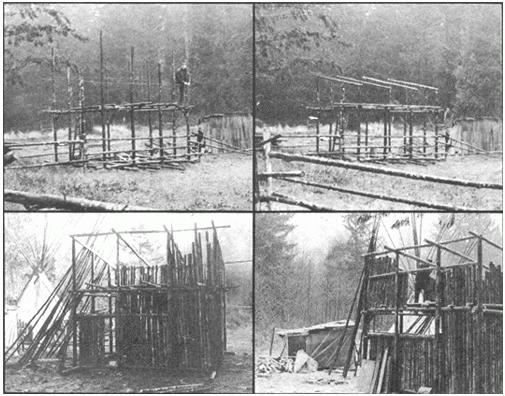
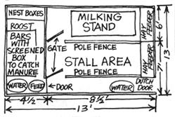

Although we'd had an earlier cold snap, it was relatively warm when we moved our ten new chickens (mostly to protect them from ferrets) into a cobbled-together shelter of cedar shakes, sheet plastic and chicken wire last fall. Then the November winds made the hens too cold to lay and we got a goat that needed a cozy home . . . and we realized that we really needed a fairly substantial barn. So Bear and I sat down and drew up plans for a 13 x 13-foot structure that would accommodate 25 chickens and a couple of goats.
We divided the floor space into a 4 1/2' x 13' chicken area separated from the goat section by chicken wire. The goats got a milking area 6' x 8 1/2' and a stall that measured 7' x 8 1/2'.
We designed a goat hay feeder that would run the full length of the barn wall opposite the chickens and a loft above the whole ground level. A 3' x 3' opening in the floor directly above the feeder, we figured, would make filling the hayrack a snap. The haymow access ladder we originally planned on never happened . . . instead, we ended up climbing into our barn's upstairs by way of the inside goat fences and the edge of the feeder.
Our storms here come from the southeast, so we positioned the barn with its 15'-high front facing north and it's 12'-high back turned to the south. On the north and east walls of the goat area we sketched in some 2 1/2' tall windows five feet off the floor.
With everything on paper, Bear and I stepped back . . . and realized that we'd have to keep total expenses for the building below $100!
Well, we live in the woods . . . right?! A log barn would be the cheapest thing for us to build. Winter was fast approaching, though (and we didn't have enough time to notch all those timbers), so we settled on a structure of vertical poles nailed to a frame.
Fortunately there are plenty of seasoned dead trees on our land-some fallen and some still standing-so Bear and I set to work gathering over 300 of the timbers. We picked poles up to six inches thick at the butt end for our barn's 12 uprights, four horizontals and four frame sills. Four-inch timbers were chosen for roof and loft supports and ground floor joists. Wall poles ranged from three to five inches in diameter at the butt and we saved the little one and two-inchers for the loft floor.
Those B.C. residents who don't happen to own usable timber should know that the Forestry Service issues a free permit which will allow such folks to harvest fallen trees and to split shakes on public land.
We already had ripsaws, a bucksaw, hammers and tape measures on hand. That left us only three things to purchase: a 100 by 16-foot roll of clear sheet plastic, 50 pounds of five-inch spikes and a little over 300 board feet of shiplapped (boards grooved along the edge to fit into each other) utility cedar in lengths of six, eight and ten feet. The. total bill was around $70 . . . $20 for the plastic and $50 for the nails and wood.
Bear and I began construction by setting our frame uprights in place . . . one at each corner and two spaced evenly along each wall. We originally planned to bury the ends of the uprights three and a half feet into the ground and support them with footings of rocks and old bricks . . . but when we dug the foundation holes we hit water at two and a half feet. That changed our plans and we had to bury the poles two feet deep instead, on a base of six to ten inches of bricks and stones. This was somewhat unfortunate since we had rot-proofed the bottom three and a half feet of the uprights with creosote before we started digging . . . which meant that well over a foot of goo-covered pole stuck out of each hole. We discovered later-after moving our tenants in-that the goat loves to eat the bark off the timbers and black sticky creosote all over Rebecca's once-clean white coat is a nuisance. So next time we'll know to "dig now, creosote later".
After getting all the vertical poles set and the holes filled, we nailed the horizontal timbers to the uprights at loft-level and laid the mow floor supports across them. Every nailed crosspole lent a little more reassuring stability to a decidedly wobbly frame.
Next we put the ground floor joists down and placed the sill logs on top, snug against the uprights. The sills, which were nailed to both the joists and the uprights, would provide a base for the wall poles.
By this time we should've had a cube, but since we had only eyed the uprights into place, the walls weren't truly straight. I understand now-from reading HOW TOBUILD YOUR HOME IN THE WOODS by Bradford Angier-that triangulation methods exist for getting square corners and straight walls, but at the time we didn't know about them.
Our next step was to carefully climb up on the shaky loft support poles and saw the uprights to the proper lengths to give the right slope to the roof . . . 12 feet high in back, 13 and 14 feet along the sides and 15 in front. The easiest way to get the correct slant is to stretch a string from the 12-foot pole to the 15-foot pole and mark the two intermediate poles where the cord crosses them. This method sounds simple, but it took us quite a while to come up with it!
Once all the uprights were cut to proper length, we added the four roof supports north to south along the tops of the vertical poles and tied them together with crosspoles running east and west across the front and back walls. This finished the frame and, surprisingly, gave it enough support so that you didn't wish you were on the ground (too much!) when climbing around in the loft. At this point we put in horizontal poles to frame the tops and bottoms of the windows. . . and that completed our work for the day.
The next morning Bear and I went out to nail on the walls . . . and bang! . . . the ground was covered with snow .. Winter had caught us with a heckuva lot still to do. After spending a couple of frosty days putting up the walls, we chinked the spaces between the poles with wild hay and moss (found hanging in huge chunks from alders in this neck of the woods). Bear took another day to put down the cedar plank ground floor on joists set two feet apart while I was busy up above laying small poles side by side for the loft floor.
We had planned to use cedar shakes for roofing, so I nailed a crosspiece-east to wes-every six to eight inches along the roof supports for the slabs of split wood to nail to. Bear then began to add the shakes while I built the inside fences and gates, put up the chicken wire divider, built the hay feeder and put together a milking stand with the lumber left over from the flooring.
I should add that it snowed a whole bunch during this time and working in the falling snow was an experience. Often my fingers got so cold-even with gloves on-that I couldn't bend them enough to hold a nail. I don't recommend building a barn in the winter . . . the loft filled half-full of snow before we got the roof done, which made it pretty doggone wet inside for a couple of weeks afterwards as the snow melted down on the chickens and Rebecca the goat.
Even after the shingling was finished our weather problems weren't over. We'd figured that if the crosspoles for the roof were alternated butt end next to small end the whole business would come out roughly level. Poles are bumpy, crooked little boogers, though, and it didn't work . . . our uneven roof leaked. We fixed that by topping everything with plastic sheeting, but at the expense of covering up our beautiful shakes. If the two of us had it to do over, we'd use milled lumber instead of cut poles on the roof.
The final step was to cover the outside of the walls with sheet plastic, held in place with nailed slats. This covered the window holes and gave the makeshift chinking job a little help in stopping drafts.
That should've been the end of our labors, but once in the barn, the animals decided to eat the chinking, so we had to put six feet of plastic along the inside walls. The only change we've made since then has been to nail some close-weave rabbit wire across the windows to give better protection against cougars, raccoons, ferrets and whatever else might like a chicken, egg or goat dinner.
If this all sounds complicated, it really isn't . . . neither Bear nor I knew anything about putting a building together when we started, but we managed. The barn might not win any beauty prizes, but it does the trick. The feed's dry, the goat's happy (even with her supply of creosote and chinking cut off and the chickens are laying lots of eggs!
|
 |
 |
|